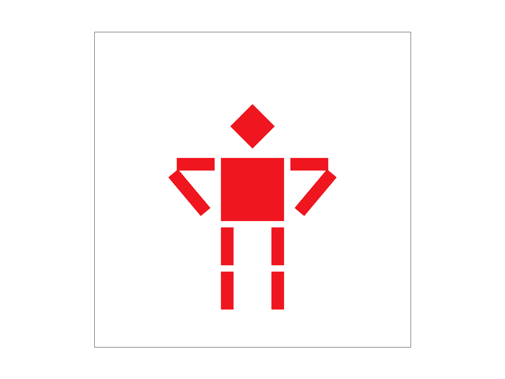

Overview
This assignment focused on developing a basic rasterizer, a core component in rendering 2D images from 3D models by converting vector graphics into a matrix of pixels for output on a screen. My implementation covers various aspects of rasterization, including edge detection, shading, and anti-aliasing techniques to smooth out jagged edges. I thoroughly enjoyed thinking carefully about how to render simple things that I have taken for granted when using digital screens for my entire life.
Rasterization
Part 1: Drawing Single-Color Triangles
Check if the triangle is defined clockwise
Because the orientation of the lines of the triangle effect our bounds calculation later, we have to ensure that the triangle lines "wind" counter-clockwise. We can do this by taking the dot product of two lines and using the right hand rule. If the z component of the dot product is negative, the triangle currently winds clockwise so we can swap the two lines and make the triangle wind counter-clockwise.
Find the bounding box
The first step of rasterizing a triangle is defining a "box" that contains all possible points of the triangle. This allows to avoid sampling every pixel on the screen which drastically improves efficiency.
Sample the pixels
We then iterate through each pixel within the bounding box. We can then use some geometry to check if the center of a pixel falls on the left side of each line (left based on the line pointing away from the perspective). If the pixel falls to the left of all three lines, it is within the triangle and we can render it via fill_pixel!
Efficiency
With the bounding box mentioned before, the workload of this method scales by the width * height of the triangle. This ensures that the algorithm will only check each pixel within the bounding box and no more.
Result of Rasterizating Sharp Triangles

Part 2: Antialiasing by Supersampling
Utility
Supersampling is useful for minimizing the effect of aliasing. As shown above, when rendering a sharp triangle, we get very weird behavior at sharp points. This is because the vectors may cover some marginal area of a pixel, but as long as it includes the center of the pixel, the pixel will be rendered. By supersampling, we get a more accurate estimate of how much area of the pixel is covered by the triangle.
Data Structure
To minimize aliasing, we can use a technique called supersampling where we take multiple samples from each pixel to gain a better understanding of the proportion of the pixel that is within the triangle. To do this, we need to store more information per pixel besides just a single color. Thus, we can create a sample_buffer structure that contains more sub-pixels. Specifically, it is a multiple of the size of the sample_buffer, where the multiple is the sampling size used.
Algorithm Changes
Now that we have a larger buffer for supersampling, we can iterate more finely through the pixels, sampling at fractional points within each pixel. Given that sample sizes are nice square numbers, we can use symmetric positional layouts for these samples, similar to the 4 pips on a die. This results in multiple colors per pixel. Given that we're working with solid-colored triangles right now, each pixel is either white or the triangle's color.
Downsampling
Now that we have our supersamples, we need to convert them into information for the original sample_buffer. To do this, we can find the average color across all super samples for each pixel. Logically, this seems reasonable with the basic case with solid color triangles. If 1/2 of the supersamples of a pixel are in the triangle, the pixel should be colored halfway between white and the triangle's color. This can be achieved by averaging each RGB channel of the supersamples.
Backwards Compatibility
It's important to note that implementing supersampling created small issues for existing methods that rendered other objects such as points or lines. Some time was spent ensuring that these other methods remained capable of functionally interfacing directly with the sample_buffer. There was an idea of allowing the rasterize_line and rasterize_point methods write directly to the sample_buffer, but I opted to abstract the logic to instead also write to the supersample_buffer to avoid possible problems in the future of writing over the rendered lines when the downsampling happened.
|
|

|
|
|
|
Part 3: Transforms
I wanted to experiment more with the combination of transforms, so I attempted to make the robot place its waist. To do this, I had to rotate the second segment of the arms to face inward and then transform the second segment of the arms to be closer to the robot's body. I also had to scale the length of the arms so they would reach the robot's body. It was an interesting task, because the order of operations (transforms) affected the result. With the svg file, I also noticed that these operations seem to apply inward to outward based on the nesting of \<\g\> elements. The importance of ordering transformations was mentioned in lecture and makes sense based on matrix multiplication, and it was noticable when ordering the rotation and transform.
Robot with hands on its waist
Part 4: Barycentric coordinates
Barycentric coordinates allow us to represent a point using 3 values α, β, and γ that represent the point's distance from each of the 3 sides of the triangle. This allows us to determine how "associated" a pixel should be with colors assigned to sides of a triangle which is really helpful for blending between colors.
Using this, we can create shades of colors across the triangles we render now.

Part 5: "Pixel sampling" for texture mapping
Pixel sampling functions by finding the texel it should sample based on the barycentric coordinates of the pixel. We can achieve this by taking the produce between the barycentric coordinates of the pixel and the dimensions of the image that we want to use as the texture. We then use a sampling method, either nearest sampling or bilinear sampling to interpolate them. Nearest sampling just rounds the sample to the nearest integer, which creates a simple and pixelated result. In contrast, bilinear sampling uses three interpolations. It first interpolates between the two texels that are closest to the calculated sample point on both the x and y axes, and then it interpolates between these two results based on the exact fractional position of the sample point within the four-texel square. This method results in a smoother, more blended image because it takes into account the values of surrounding texels which functionally averages their values in.
|
|
|
|
|
|
Bilinear sampling can be much more effective compared to linear sampling when the textures are viewed from at a sharp angle or father away. This is because the transitions between pixels can be sharper, so averaging color values based on neighbors can help reduce this. We can especially see this when examining the white lines on the edges of the maps in the images above.
Part 6: "Level sampling" with mipmaps for texture mapping
Level sampling relies on mipmaps to sample the texture of an image at different resolutions which we call levels. We implemented this by first scaling the uv barycentric vector differences by the size of the texture and then take the log of the largest norm. For the sampling process, we either set the level at 0, round the level to the nearest integer, or we sample the nearest integer below and above the value and then interpolate them.
Pixel sampling is the fastest and most efficient. However, it has the worst aliasing. With level sampling using mipmaps, aliasing is much better, but it uses more memory since multiple versions of the texture have to be stored. Taking multiple samples per pixel also reduces aliasing, but is slower as it takes more computational power and more memory (with a trivial implementation)
|
|
|
|
|
|